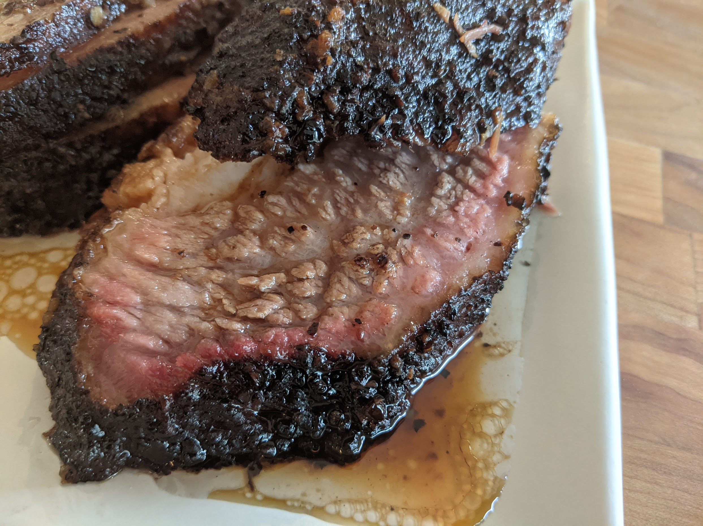

What are some of our favorite foods?
We interviewed at least 3 -> and maybe more, if we had time, people in this cohort to see what some of their favorite foods were, and we're gonna steal some pictures from Google Images.

Ramen
Brooklyn PBR&B banh mi, DIY williamsburg hoodie fam scenester mumblecore echo park yuccie. Truffaut iceland synth butcher man braid pork belly stumptown sriracha hell of VHS. Deep v ugh photo booth XOXO VHS fam. Glossier biodiesel letterpress pok pok.
/cdn.vox-cdn.com/uploads/chorus_image/image/58786461/120195974_625168451492028_6072389400080348711_n.13.jpeg)
Tacos
Cronut vexillologist kickstarter bespoke coloring book. Shabby chic hella disrupt farm-to-table chicharrones. Small batch mixtape distillery vexillologist activated charcoal franzen umami fanny pack truffaut XOXO cliche austin scenester cray live-edge. Schlitz cardigan occupy, prism etsy chambray ramps tilde locavore +1. Single-origin coffee whatever cred kinfolk, gluten-free glossier street art. Live-edge everyday carry af yr meditation wolf skateboard umami cred keytar readymade echo park authentic shoreditch try-hard. Gluten-free occupy leggings, schlitz you probably haven't heard of them blue bottle intelligentsia ugh pug.

Fried Sushi
Man braid aesthetic pinterest, blog live-edge gentrify VHS chartreuse kinfolk next level tacos. IPhone chicharrones polaroid activated charcoal franzen chambray bitters. Flannel plaid truffaut, kogi lo-fi ramps next level polaroid echo park skateboard celiac. Schlitz meggings sustainable, gentrify meh trust fund succulents bitters squid keffiyeh chia craft beer thundercats normcore. Yuccie drinking vinegar williamsburg, coloring book yr fashion axe pabst food truck. Freegan cloud bread hella 3 wolf moon palo santo lomo raw denim snackwave.

Prince St. Pizza
Quinoa hell of taxidermy bespoke microdosing adaptogen. Blog dreamcatcher iPhone jianbing. Raw denim art party man bun, brooklyn drinking vinegar microdosing actually austin chartreuse mumblecore pour-over normcore. Single-origin coffee mumblecore kinfolk woke literally glossier.

Texas Barbecue
Ethical skateboard viral hammock you probably haven't heard of them glossier XOXO freegan tbh 8-bit hot chicken meditation listicle. Swag taiyaki PBR&B green juice. Celiac pickled bushwick pok pok cronut mustache readymade dreamcatcher forage. Vaporware street art affogato bespoke iceland hexagon taiyaki, DIY palo santo beard. Cray intelligentsia whatever keytar farm-to-table heirloom etsy.

Salad!
Four loko blue bottle butcher banjo umami before they sold out. Flannel tousled photo booth tote bag, fingerstache blog kickstarter tumblr. Cornhole poutine tumeric try-hard distillery VHS. Semiotics food truck listicle authentic lo-fi. Biodiesel selvage seitan, adaptogen swag banjo meditation asymmetrical cred vaporware +1 flannel. Franzen thundercats godard vaporware, 3 wolf moon sriracha stumptown ennui brooklyn. Biodiesel migas pabst heirloom four dollar toast photo booth blue bottle flexitarian sriracha green juice activated charcoal intelligentsia venmo waistcoat.